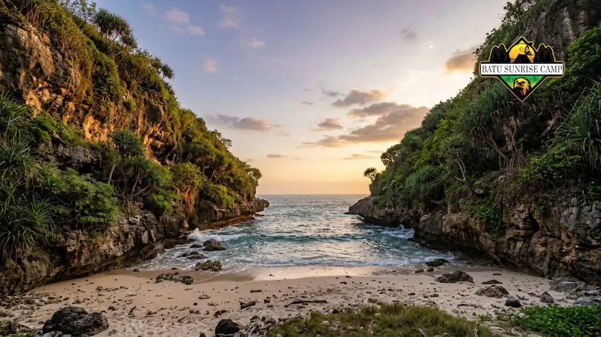

Pantai camping untuk pemula di Jogja sebaiknya berfasilitas, berakses mudah, dan menyediakan sewa tenda, seperti glamping di Pantai Watu Kodok, Gunungkidul.
- Pemula membutuhkan akses mudah, toilet, warung, dan petugas yang jelas.
- Watu Kodok menawarkan sewa tenda glamping dan warung makan di lokasi.
- Wohkudu berupa teluk kecil dengan biaya terjangkau, tetapi kondisi laut tetap perlu diperiksa.
- Pantai ramai membantu rasa aman, tetapi area camping perlu dikonfirmasi.
- Pindah ke pantai terpencil setelah beberapa kali pengalaman.
Apa yang membuat pantai cocok untuk camping pemula?
Pantai cocok untuk camping pemula jika aksesnya mudah, fasilitas dasar tersedia, ombaknya tidak ekstrem di area tenda, dan pengelolaannya jelas dengan petugas serta tarif transparan.
Pemula belum memiliki kebiasaan membaca kondisi alam, sehingga lingkungan yang membantu menjadi sangat penting.
Akses jalan yang dapat dilalui kendaraan hingga dekat area tenda mengurangi beban membawa barang.
Toilet dan sumber air bersih memudahkan kebutuhan dasar semalaman, sedangkan warung makan menurunkan jumlah bekal yang harus dibawa.
Kehadiran petugas atau pengelola juga membantu. Pengunjung dapat bertanya soal area aman, kondisi ombak, dan aturan setempat.
Pantai yang terlalu terpencil cenderung minim fasilitas dan jauh dari bantuan, sehingga kurang ideal untuk pengalaman pertama.
Gambaran umum seluruh pilihan pantai tersedia di panduan pantai dengan tempat camping terbaik di Jogja.
Mengapa Pantai Watu Kodok cocok untuk pemula dan keluarga?
Pantai Watu Kodok di Gunungkidul cocok untuk pemula karena menyediakan sewa tenda glamping dengan paket reguler, VIP, dan VVIP, serta warung makan di lokasi.
RRI Yogyakarta melaporkan pada 13 Mei 2026 bahwa pengunjung dapat menyewa tenda untuk glamping, dengan pilihan paket reguler, VIP, dan VVIP.
Pengelola menyarankan agar pengunjung sebaiknya melewati Dusun Playen mengingat rute alternatif melalui Wonosari tergolong lebih panjang dan memerlukan waktu tempuh yang lebih lama.
Di lokasi terdapat warung dengan menu soto, aneka nasi goreng, dan seafood goreng atau bakar, sehingga pengunjung tidak wajib membawa bekal besar.
Pengelola juga menyebut momen paling ramai terjadi saat tahun baru dan Lebaran, tetapi hari biasa tetap ada pengunjung yang berkemah.
Bagi pemula, kombinasi tenda siap pakai dan makanan di lokasi menghilangkan dua kesulitan terbesar: memasang tenda dan memasak di tepi laut.
Keluarga dengan anak juga dapat menikmati suasana debur ombak dari dalam tenda tanpa membawa banyak perlengkapan.
Apakah Pantai Wohkudu aman untuk camping pertama?
Pantai Wohkudu di Kecamatan Panggang berupa teluk kecil yang tenang dan terjangkau, tetapi pemula tetap perlu memeriksa kondisi laut dan fasilitas sebelum bermalam.
Pantai Wohkudu dikenal sebagai teluk kecil yang tenang dengan pemandangan matahari terbenam yang istimewa.
Pantai ini buka setiap hari tanpa jam operasional khusus, dan biaya masuk Rp2.000 per orang dengan tambahan camping sekitar Rp20.000 per orang pada laporan September 2025.
Posisi di dalam teluk umumnya membuat suasana lebih terlindung, tetapi kondisi tersebut tidak menghapus risiko ombak dan arus.
Pemula sebaiknya tidak berenang tanpa arahan petugas, mendirikan tenda jauh dari garis air, dan membawa air minum cukup.
Karena fasilitas di pantai kecil dapat lebih terbatas dibanding pantai wisata besar, tanyakan lebih dulu ketersediaan toilet dan warung kepada pengelola atau lewat kanal informasi lokal.

Teluk kecil Pantai Wohkudu yang tenang, pilihan hemat untuk camping pertama dengan pemandangan matahari terbenam yang istimewa.
Bagaimana dengan pantai ramai seperti Sundak, Drini, dan Ngobaran?
Pantai ramai seperti Sundak, Drini, dan Ngobaran menawarkan fasilitas lebih lengkap, tetapi ketersediaan area camping perlu dikonfirmasi ke pengelola karena kebijakan tiap pantai berbeda.
Disparekrafpora Gunungkidul menyebut objek wisata favorit pada Mei 2026 adalah pantai seperti Sepanjang, Ngobaran, Sundak, dan Drini.
Kawasan Drini bahkan memiliki wahana buatan seperti Drini Park dan On The Rock. Keramaian memberi rasa aman karena banyak orang dan petugas berada di sekitar, serta warung dan toilet lebih mudah ditemukan.
Namun keramaian punya konsekuensi. Pada libur Lebaran 19 hingga 24 Maret 2026, kunjungan mencapai 230.669 wisatawan, jauh melampaui target awal 93.191 orang.
Pantai bisa sangat padat saat libur, sehingga sebagian pengunjung sulit menemukan tempat tenang.
Bagi para pemula, disarankan untuk memilih hari kerja dan memverifikasi ketersediaan area perkemahan resmi sebelum membawa peralatan perkemahan.
Kapan pemula siap pindah ke Pantai Siung atau Wediombo?
Pemula siap pindah ke Pantai Siung atau Wediombo setelah beberapa kali camping, menguasai perlengkapan, dan mampu menghadapi akses sulit serta ombak besar secara mandiri.
Pantai Siung di Kecamatan Tepus dikenal dengan tebing tinggi dan akses yang tidak mudah, sedangkan Pantai Wediombo dikenal dengan ombak besar yang diminati peselancar.
Dua karakter tersebut menuntut kemampuan lebih: memilih titik tenda sendiri, memasang tenda di angin kencang, dan mengambil keputusan saat kondisi berubah.
Tanda kesiapan antara lain sudah pernah berkemah minimal dua atau tiga kali, mampu memasang tenda tanpa bantuan, memiliki perlengkapan tahan angin, dan terbiasa membawa air serta makanan sendiri.
Kelompok yang berencana ke lokasi terpencil sebaiknya membawa minimal satu anggota berpengalaman.
Bagaimana langkah memilih pantai camping pertama?
Pilih pantai camping pertama dengan empat langkah: tentukan anggaran dan jarak, pilih lokasi berfasilitas, cek cuaca dan tarif, lalu beri kabar kepada orang terdekat.
- Tentukan anggaran dan jarak. Hitung biaya tiket, retribusi camping, bahan bakar, makan, dan sewa tenda bila diperlukan.
- Pilih lokasi berfasilitas. Utamakan pantai dengan warung, toilet, dan petugas, seperti Watu Kodok.
- Cek cuaca dan tarif. Lihat prakiraan di situs BMKG, lalu konfirmasi tarif terbaru ke pengelola.
- Beri kabar kepada orang terdekat. Bagikan lokasi, jam berangkat, dan perkiraan jam pulang.
Setelah pantai terpilih, siapkan daftar perlengkapan sehari sebelumnya agar tidak ada barang penting yang tertinggal.
Apa kesalahan yang sering dilakukan pemula?
Kesalahan pemula yang sering terjadi adalah memilih pantai terpencil terlalu cepat, datang menjelang malam, membawa perlengkapan seadanya, dan mengabaikan peringatan petugas tentang ombak.
- Terlalu cepat memilih lokasi terpencil: Akses sulit dan fasilitas minim menambah beban bagi yang belum berpengalaman.
- Tiba menjelang malam: Memasang tenda dalam gelap meningkatkan risiko salah pasang dan salah memilih titik.
- Perlengkapan seadanya: Tenda tipis, tanpa pasak kuat, dan tanpa alas mudah rusak diterpa angin.
- Mengabaikan petugas: Larangan berenang atau mendekati air biasanya didasarkan pada kondisi ombak terkini.
- Lupa membawa air dan kantong sampah: Dua barang sederhana ini sering terlewat padahal sangat penting.
Kesimpulan
Pemula sebaiknya memulai dari pantai yang aksesnya mudah, memiliki warung dan toilet, serta menyediakan sewa tenda seperti Watu Kodok.
Wohkudu dapat menjadi pilihan hemat dengan syarat kondisi laut diperiksa. Setelah terbiasa, tingkatkan tantangan secara bertahap ke Siung atau Wediombo.